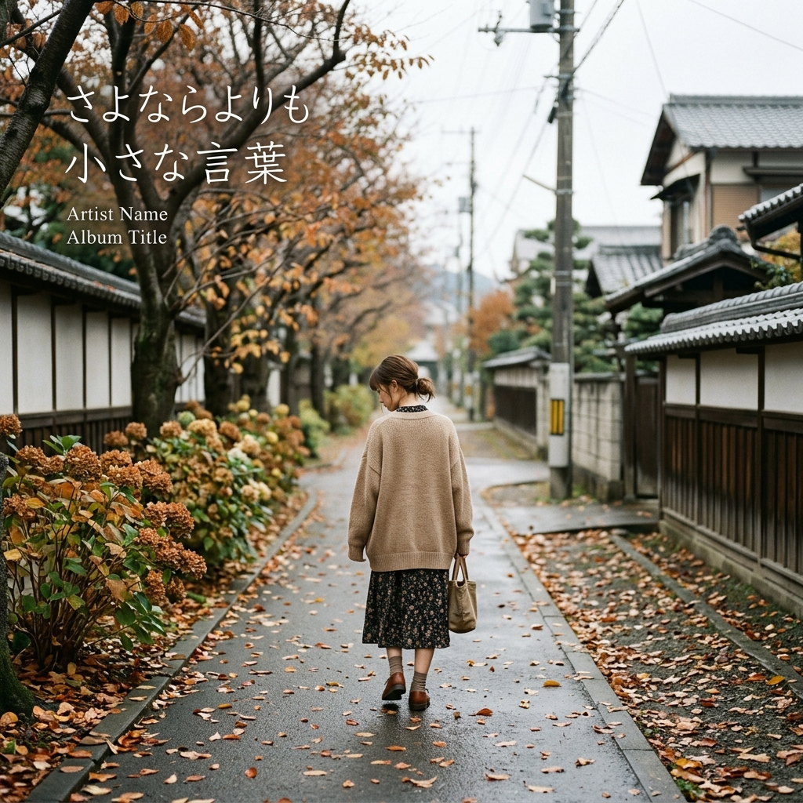

● SINGLE / OUT NOW
さよならよりも小さな言葉
松原駿士
LYRICS / 歌詞
[Verse 1] 終電の窓に 君の横顔 言えない言葉が ガラスを曇らす ほどけたイヤホン 片方ずつで 同じ曲なのに 違う場所へ [Pre-Chorus] 交差点の青が 変わる前に ほんの少しだけ 振り向いて [Chorus] まだ消えない 君の声が 胸の奥で 明日を揺らす 戻れなくても 忘れなくても この夜を越えていける まだ消えない あの日の熱 冷めた指に 残る約束 さよならよりも 小さな言葉 君に届けばいい [Verse 2] 自販機の灯り 濡れた歩道 君が選んだ 甘い缶コーヒー ポケットの底で 鍵が鳴るたび 帰る場所だけ 思い出してる [Pre-Chorus] 信号の向こう 人波の中 似た背中を また探してる [Chorus] まだ消えない 君の声が 胸の奥で 明日を揺らす 戻れなくても 忘れなくても この夜を越えていける まだ消えない あの日の熱 冷めた指に 残る約束 さよならよりも 小さな言葉 君に届けばいい [Bridge] もしも季節が 巻き戻っても 同じところで 君を選ぶよ だけど今なら その手を離し 君の明日を 願えるから [Final Chorus] まだ消えない 君の声が 胸の奥で 明日を揺らす 戻れなくても 忘れなくても この夜を越えていける まだ消えない あの日の熱 遠い街に 溶けてゆく さよならよりも 小さな言葉 ありがとう 届けばいい [Outro] ありがとう 届けばいい 窓の向こうへ 朝が来る
松原駿士TURN IT UP. FEEL IT ALL.